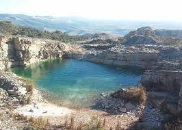

Inicio
Escolha seu destino:
São Thomé das Letras
Capitólio
Serra do Cipó
São Thomé das Letras

São Thomé das Letras é um município do estado de Minas Gerais, no Brasil. localiza-se a 346 Km da capital do estado.Sua população em 2010,Segundo o censo realizado pelo instituto Brasileiro de Geografia e Estatística,era de 6.655 habitantes.
Capitólio
Capitolio e um municipio brasileiro do estado de Minas Gerais.De acordo com o instituto Brasileiro de Geografia e Estatística.Sua população era estimada em 8.663 habitantes em 2010.
Serra do Cipó
Serra do Cipó e um distrito do município brasileiro de Santana do Riacho, no interior do estado de Minas Gerais.De acordo com o instituto Brasileiro de Geografia e Estatística,sua população no ano de 2010 era de 1941 habitantes sendo 982 homens e 959 mulheres, possuindo um total de 1.100 domicílios particulares.
Calculadora
Tempo:
Velocidade Média:
Rendimento Média:
Preço da Gasolina: